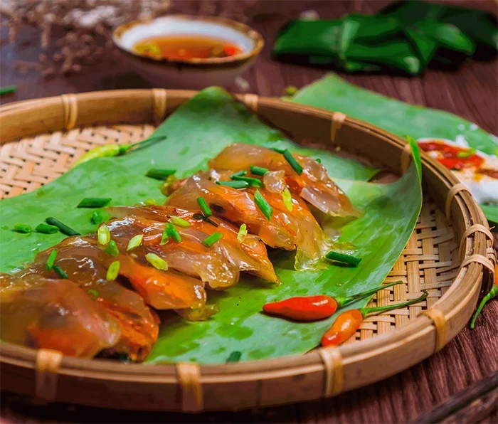

🥟Bánh bột lọc Huế
💁🏻♀️ Giới thiệu
Bánh bột lọc nổi tiếng với lớp vỏ trong suốt và nhân tôm thịt đậm đà, xuất hiện từ gánh hàng rong đến bàn tiệc cung đình.
🥣 Nguyên liệu chính
• Bột năng làm vỏ
• Tôm, thịt mỡ
• Lá chuối/lá dong
• Gia vị: tiêu, hành, nước mắm
🧑🍳 Cách chế biến
• Rim tôm thịt cho đậm vị
• Nhào bột dẻo quánh
• Hấp đến khi bánh trong vắt
💭 Mách nhỏ cho bạn
👉🏻 Thử “bánh mì kẹp bánh bột lọc” – trải nghiệm cực lạ
⭐ “Thiên đường” các loại Bánh Huế
• Bánh bèo: chén nhỏ xinh, tôm chấy, mỡ hành
• Bánh nậm: mềm mịn, gói lá dong
• Bánh khoái: giòn, béo, ăn kèm nước lèo đặc trưng